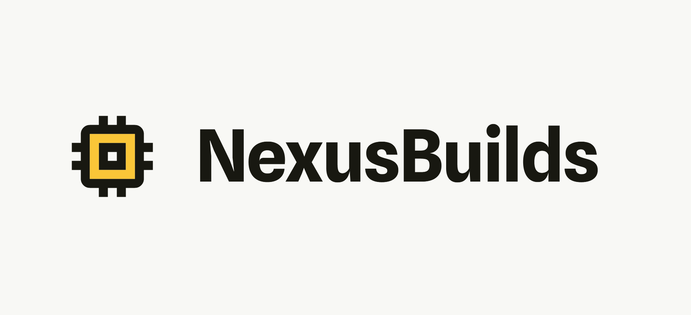
NexusBuilds PC Building Service
A PC Building Service for Everyone
The NexusBuilds PC Building Service is a service aimed towards streamlining the PC building process for both clients and builders. It incorporates a unique, communication-focused approach to PC building, where clients of varying experience can express their needs and preferences to builders in a detailed and organized manner, turning consulting into an optional process for builders.
Almost everyone will need a PC nowadays, with a growing number of people interested in a custom-built PC rather than the default store-bought counterpart. However, the process of building a PC can be too challenging for beginners, while those with more experience often have specific wants but lack the time or resources to build a PC on their own. NexusBuilds acknowledges both audiences, offering a seamless and personalized PC building experience for everyone.
Credit: Unsplash, Pexels (Stock images; used under Unsplash and Pexels licenses)
Problem Statement
The audiences in need of a tailored PC are extremely varied, with builders needing to accomodate as many people as possible.
How might we make the process of obtaining a custom PC more accessible to consumers, while easing the burden of communication for custom PC builders?
Research
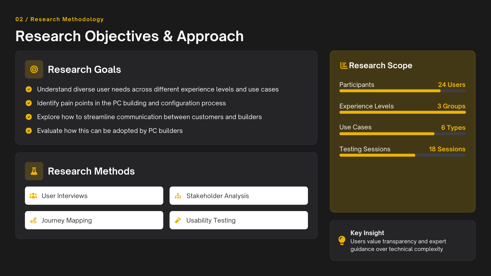
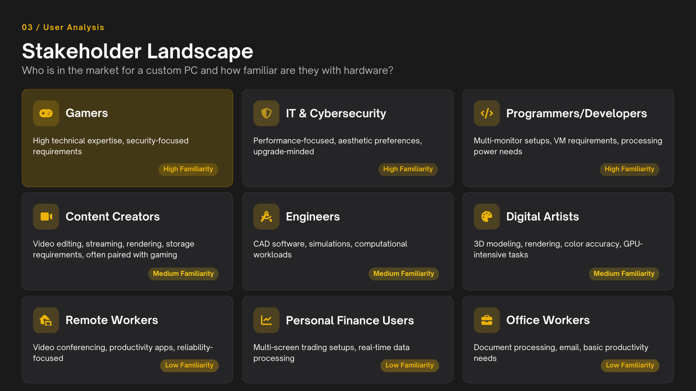
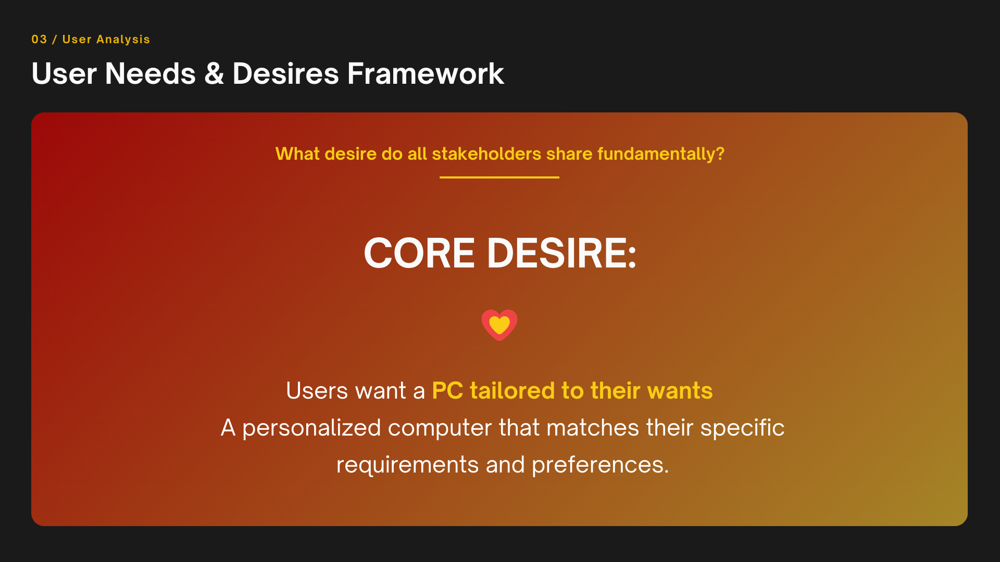
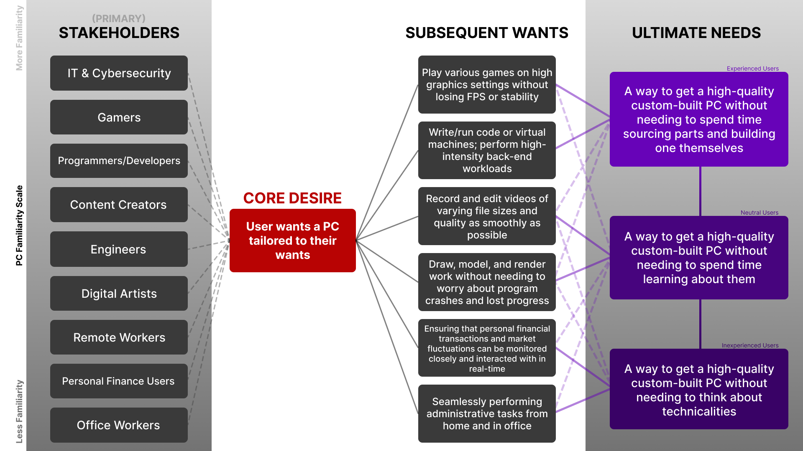
Synthesis
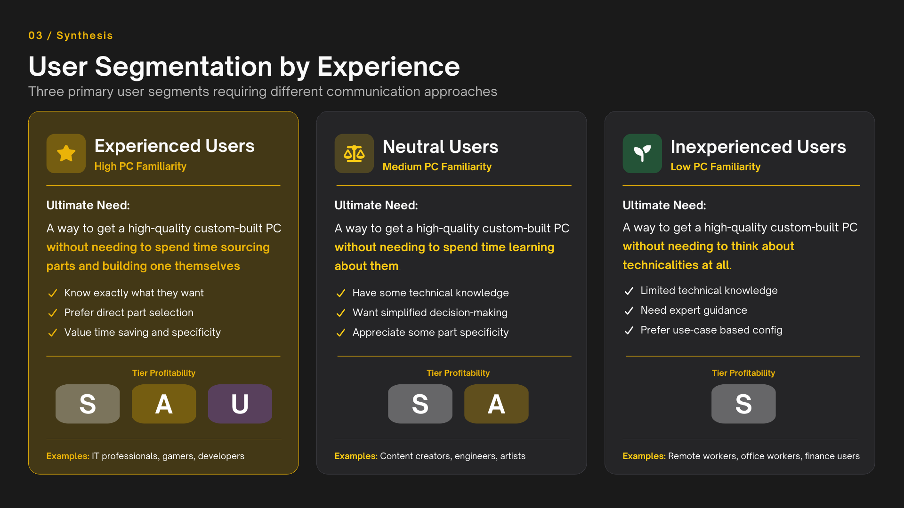
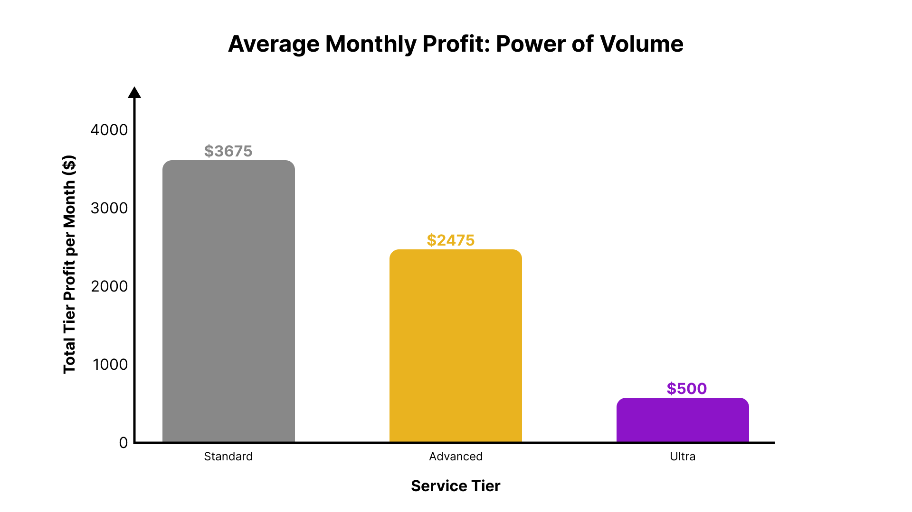

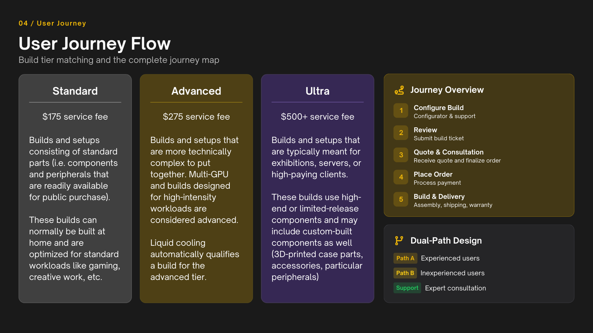
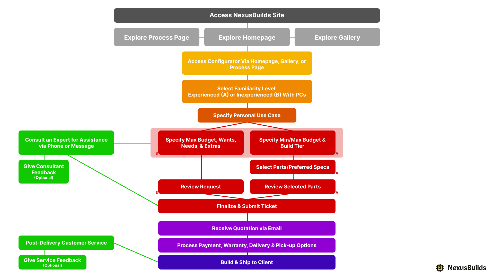
User Testing
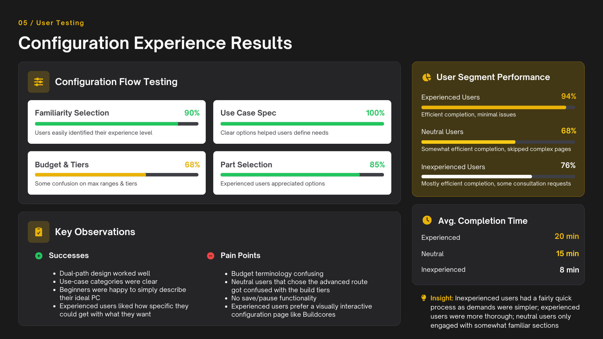
Feedback
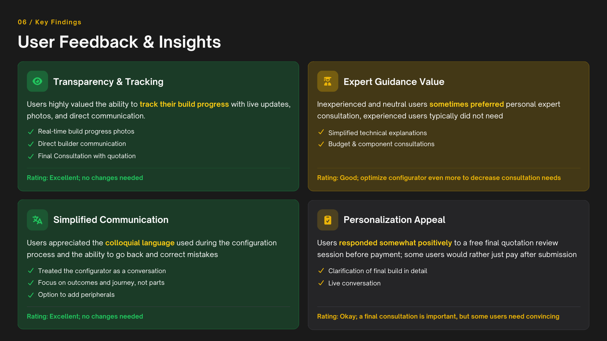
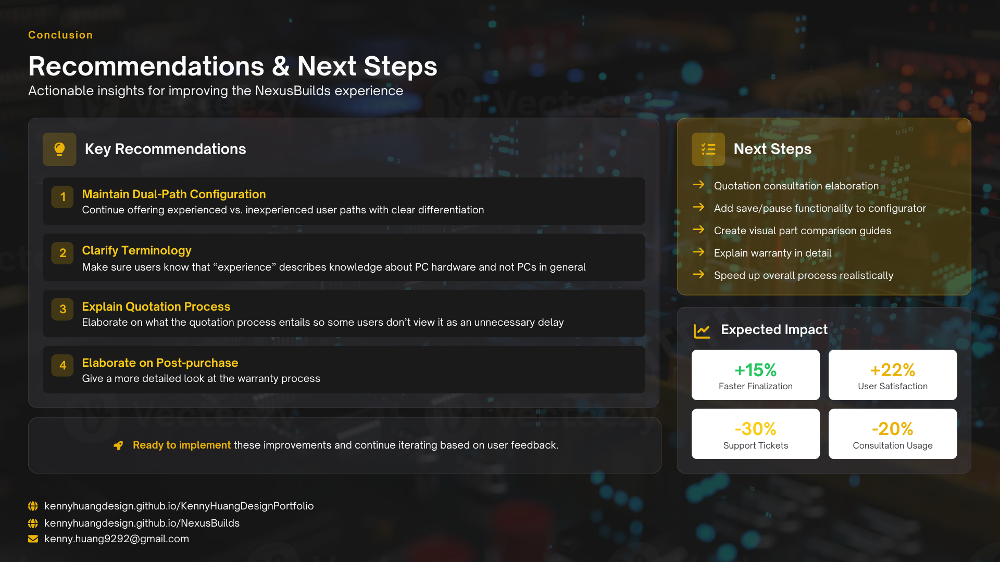